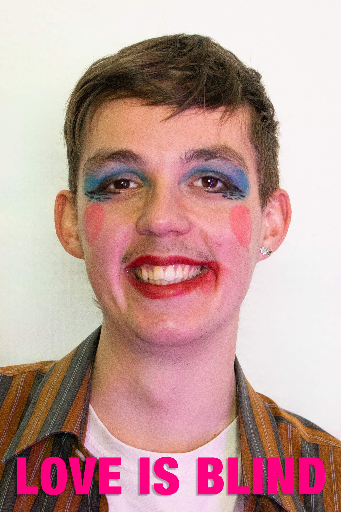
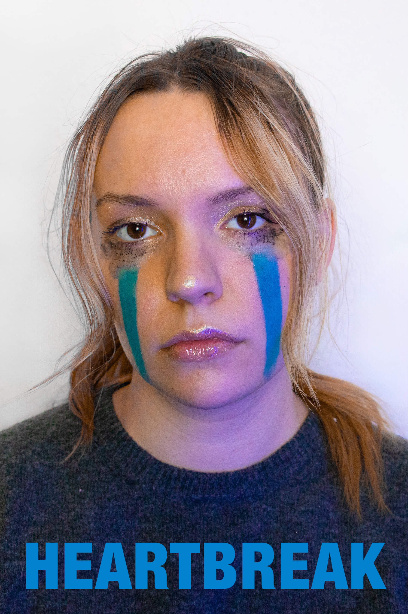
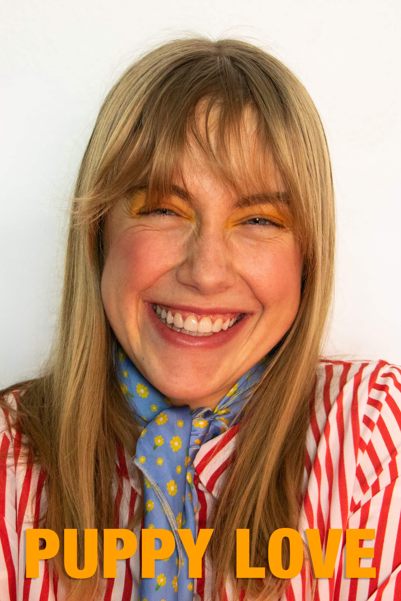
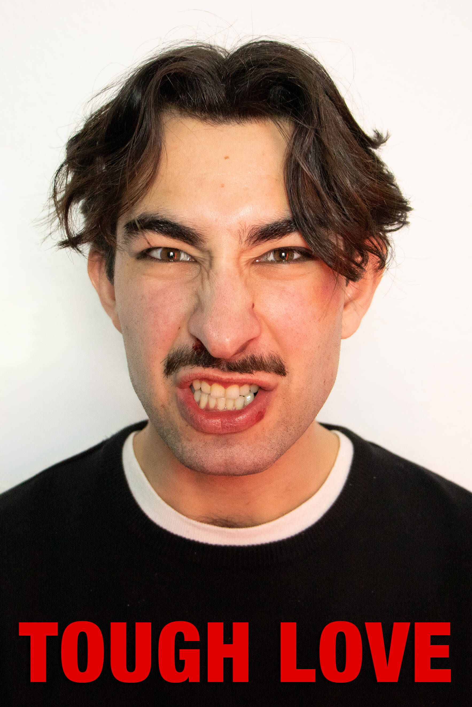
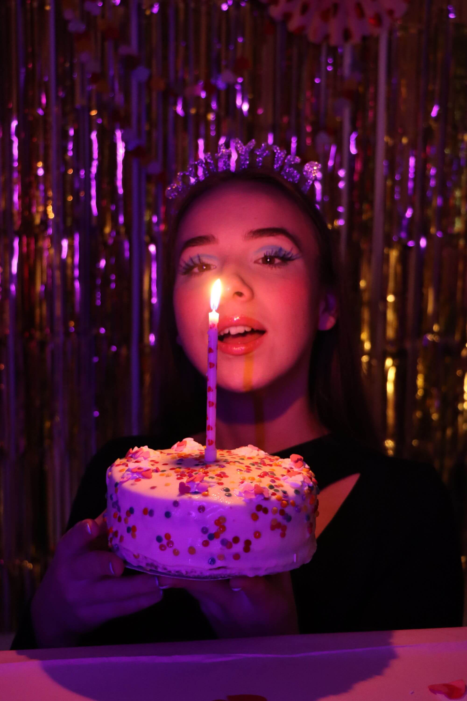
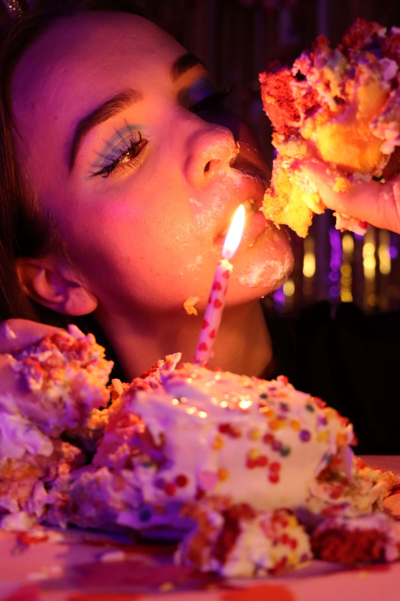
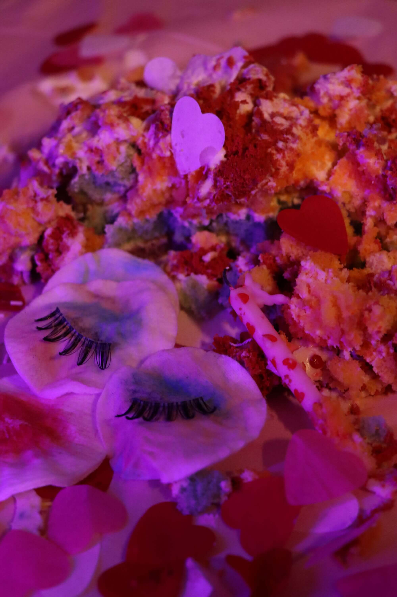
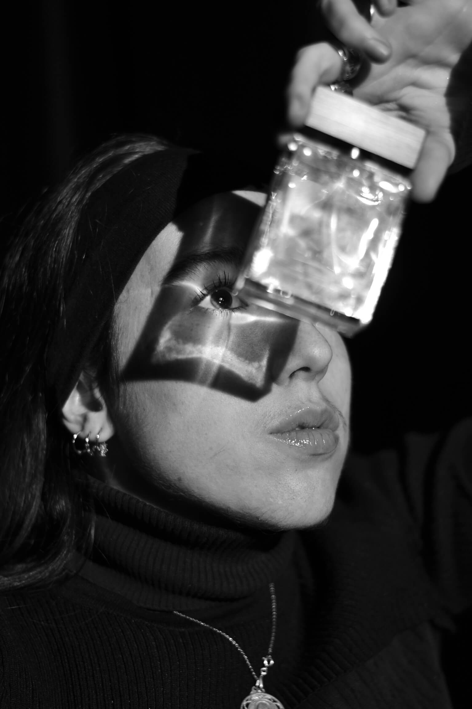
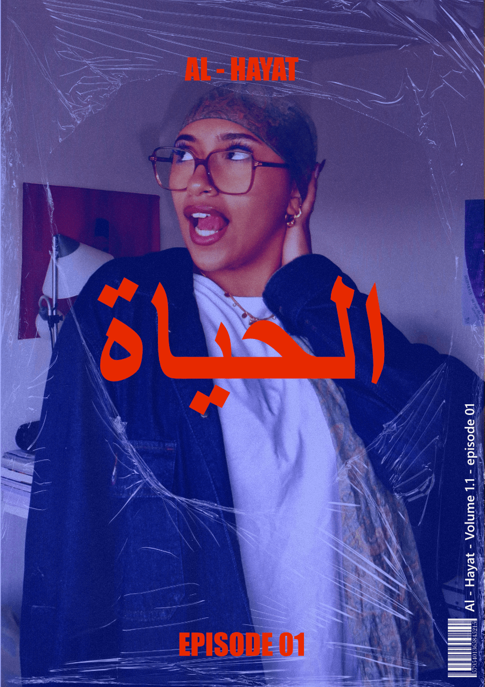
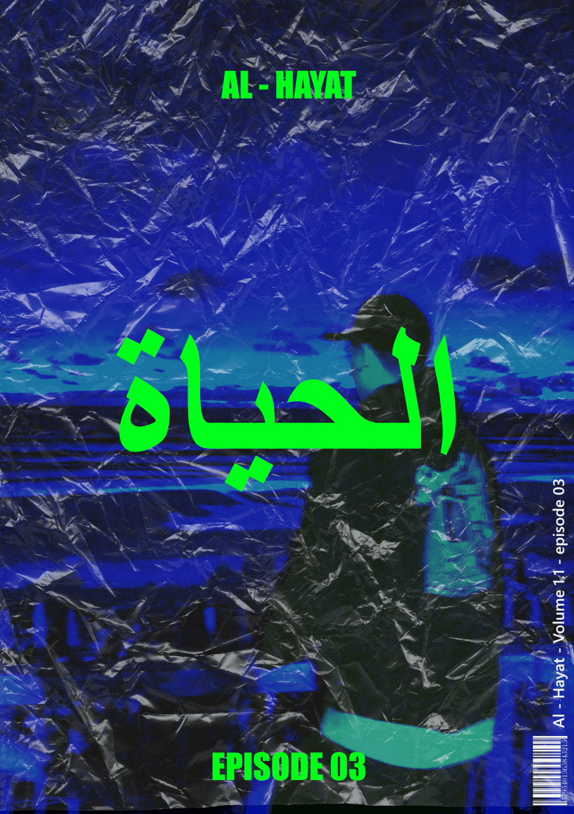

PROJETS PERSONNELS
Projet photographie
La photographie est pour moi bien plus qu'un loisir : c'est une manière d'explorer des perspectives, de raconter des histoires et d'expérimenter des concepts créatifs.
Que ce soit à travers le portrait, la mise en scène ou la retouche, j'aime jouer avec la lumière, les compositions et les ambiances pour donner vie à des univers visuels uniques.








Projet Al-Hayat
Le projet Al-Hayat qui transforme des photos prises à l'appareil photo portable de mes proches et moi en affiche de magazine. L'idée est de figer des moments de vie dans le temps et d'en garder un souvenir matériel conservé "sous plastique" et que l'on consulte par nostalgie.



